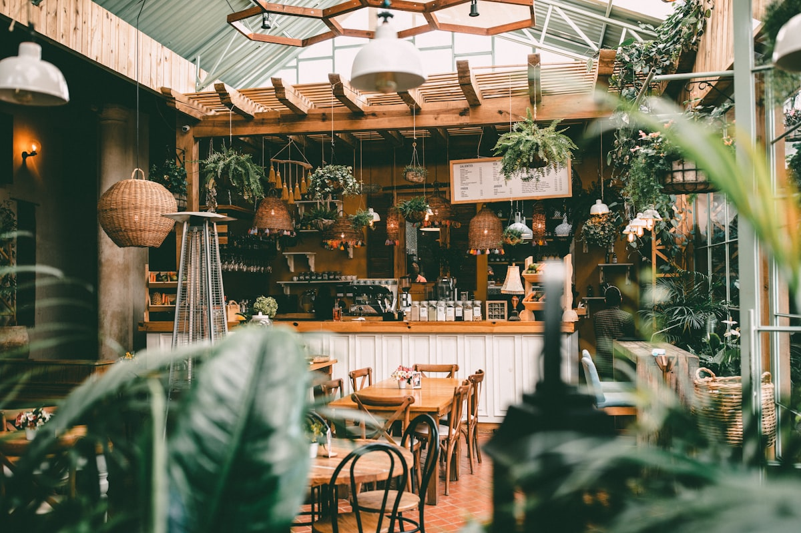
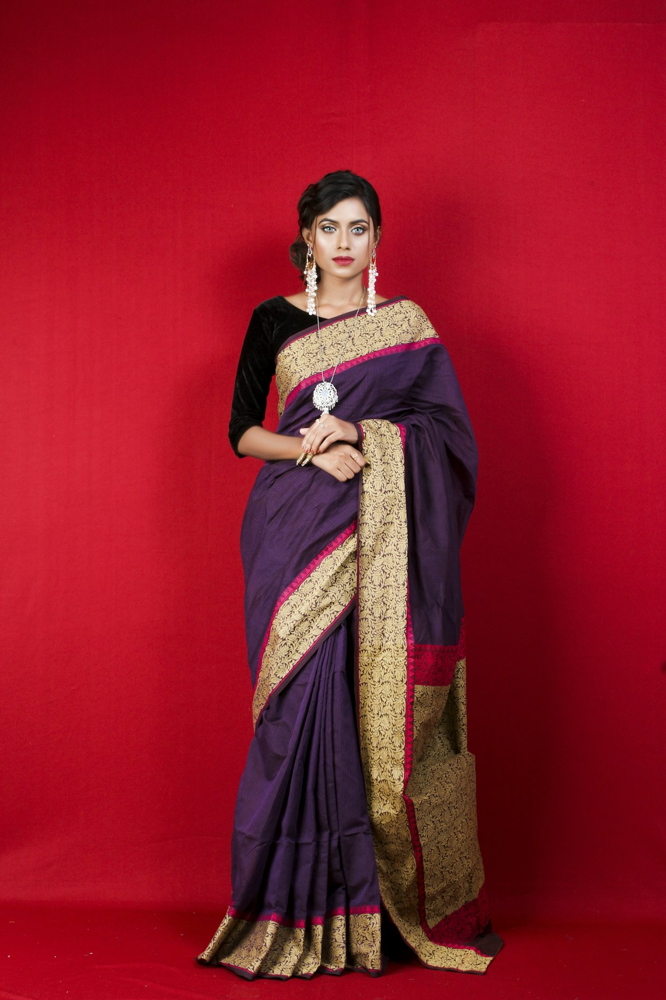
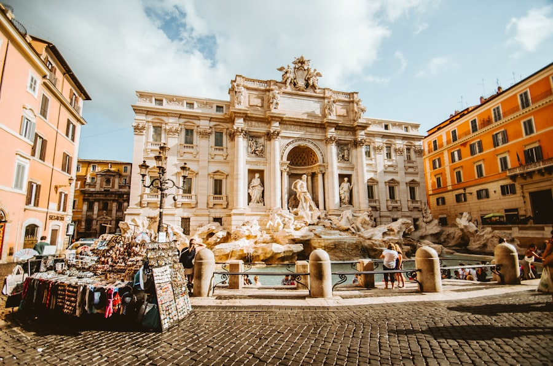
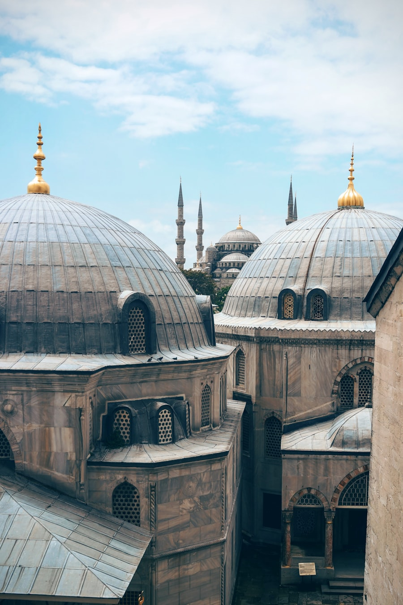

Collection 01
Light & Stone
A study of old Suryapur, seen through its temples and public spaces.

Fragments of city life, gathered together for the next generation.
Hover over any image for a gentle zoom effect. Edit the image file name and caption below to change the collection.



A study of old Suryapur, seen through its temples and public spaces.

Objects and voices from the historic merchant quarter.

Rituals, mornings and gatherings at the water's edge.